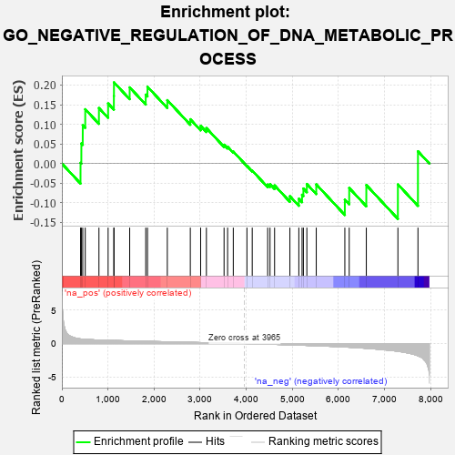

| | | Dataset | 7d |
| Phenotype | NoPhenotypeAvailable |
| Upregulated in class | na_pos |
| GeneSet | GO_NEGATIVE_REGULATION_OF_DNA_METABOLIC_PROCESS |
| Enrichment Score (ES) | 0.20685227 |
| Normalized Enrichment Score (NES) | 0.68494207 |
| Nominal p-value | 0.8977778 |
| FDR q-value | 0.9650617 |
| FWER p-Value | 1.0 |
Table: GSEA Results Summary

Fig 1: Enrichment plot: GO_NEGATIVE_REGULATION_OF_DNA_METABOLIC_PROCESS
Profile of the Running ES Score & Positions of GeneSet Members on the Rank Ordered List
| PROBE | GENE SYMBOL | GENE_TITLE | RANK IN GENE LIST | RANK METRIC SCORE | RUNNING ES | CORE ENRICHMENT | | 1 | NBN | | | 405 | 0.696 | 0.0018 | Yes |
| 2 | MLH1 | | | 423 | 0.679 | 0.0511 | Yes |
| 3 | ERCC1 | | | 453 | 0.660 | 0.0975 | Yes |
| 4 | THOC1 | | | 507 | 0.627 | 0.1384 | Yes |
| 5 | BLM | | | 804 | 0.531 | 0.1414 | Yes |
| 6 | MEN1 | | | 1003 | 0.483 | 0.1531 | Yes |
| 7 | SRC | | | 1128 | 0.459 | 0.1722 | Yes |
| 8 | KMT2A | | | 1130 | 0.458 | 0.2069 | Yes |
| 9 | DACH1 | | | 1471 | 0.395 | 0.1940 | No |
| 10 | MSH2 | | | 1819 | 0.334 | 0.1756 | No |
| 11 | OTUB1 | | | 1857 | 0.326 | 0.1956 | No |
| 12 | XRCC1 | | | 2287 | 0.262 | 0.1615 | No |
| 13 | XRN1 | | | 2786 | 0.185 | 0.1128 | No |
| 14 | RTEL1 | | | 3010 | 0.148 | 0.0960 | No |
| 15 | OGG1 | | | 3135 | 0.132 | 0.0904 | No |
| 16 | UBR5 | | | 3518 | 0.074 | 0.0479 | No |
| 17 | ZNF91 | | | 3595 | 0.061 | 0.0429 | No |
| 18 | HSF1 | | | 3718 | 0.039 | 0.0305 | No |
| 19 | PARP1 | | | 4014 | -0.010 | -0.0059 | No |
| 20 | MSH6 | | | 4129 | -0.028 | -0.0181 | No |
| 21 | ERCC6 | | | 4464 | -0.087 | -0.0536 | No |
| 22 | PINX1 | | | 4515 | -0.097 | -0.0526 | No |
| 23 | GATA3 | | | 4614 | -0.120 | -0.0558 | No |
| 24 | XRCC5 | | | 4946 | -0.187 | -0.0833 | No |
| 25 | FLCN | | | 5140 | -0.235 | -0.0898 | No |
| 26 | ATM | | | 5210 | -0.249 | -0.0796 | No |
| 27 | TNKS2 | | | 5239 | -0.254 | -0.0638 | No |
| 28 | RAD50 | | | 5314 | -0.276 | -0.0522 | No |
| 29 | CERS1 | | | 5518 | -0.325 | -0.0532 | No |
| 30 | TNKS | | | 6138 | -0.516 | -0.0920 | No |
| 31 | RGN | | | 6233 | -0.547 | -0.0623 | No |
| 32 | PIF1 | | | 6604 | -0.713 | -0.0549 | No |
| 33 | PARP3 | | | 7289 | -1.158 | -0.0532 | No |
| 34 | DCP2 | | | 7724 | -1.833 | 0.0311 | No |
Table: GSEA details [plain text format]
 Fig 2: GO_NEGATIVE_REGULATION_OF_DNA_METABOLIC_PROCESS: Random ES distribution
Fig 2: GO_NEGATIVE_REGULATION_OF_DNA_METABOLIC_PROCESS: Random ES distribution
Gene set null distribution of ES for GO_NEGATIVE_REGULATION_OF_DNA_METABOLIC_PROCESS